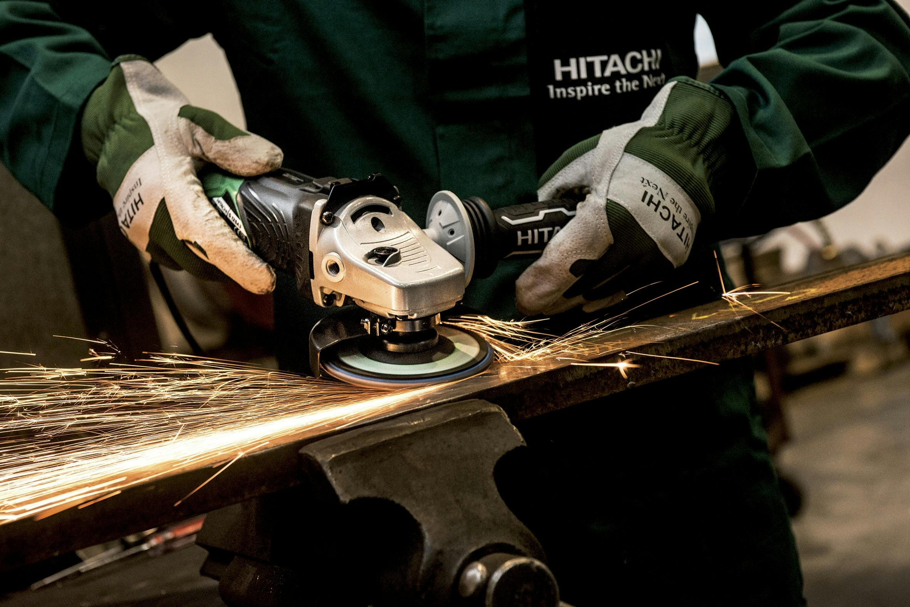
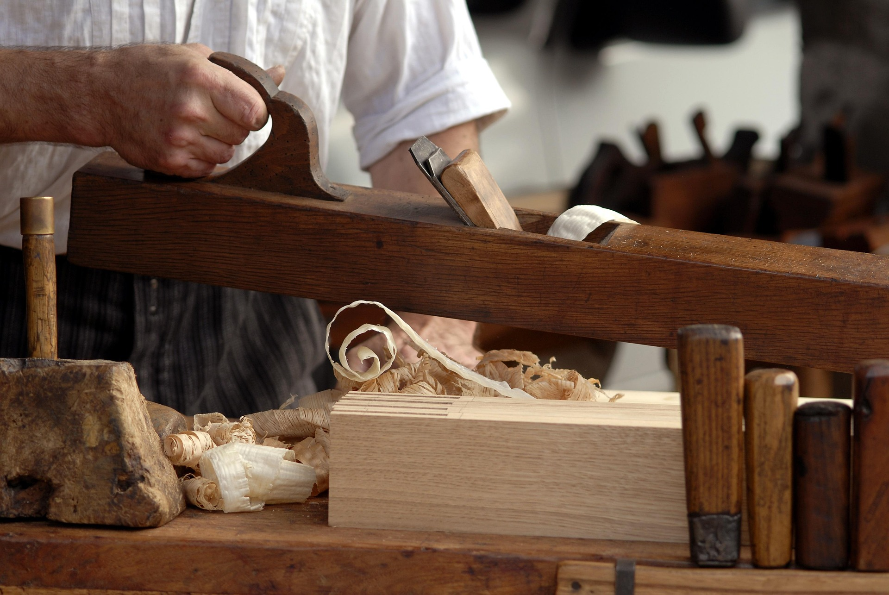
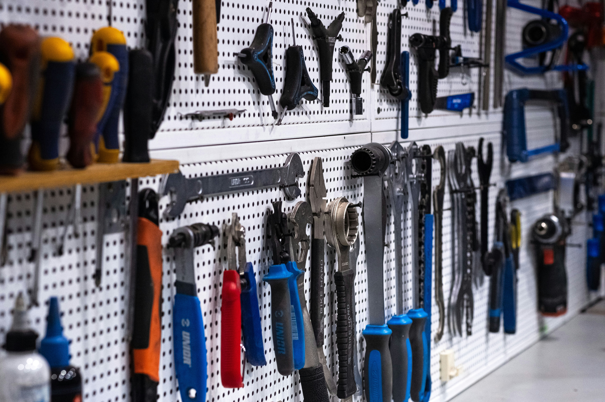

Projektistamme
Merenranta Makers on luova ja yhteisöllinen työtila, jossa yhdistyvät teknologia, käsityö ja yhdessä tekeminen. Tilassamme voit työskennellä metallin, puun, elektroniikan sekä digitaalisten projektien parissa modernien työkalujen ja laitteiden avulla. Projektimme tavoitteena on tarjota inspiroiva ympäristö oppimiselle, kokeilemiselle ja uusien ideoiden toteuttamiselle. Haluamme tuoda yhteen ihmisiä, jotka ovat kiinnostuneita rakentamisesta, suunnittelusta ja uuden oppimisesta – kokemustasosta riippumatta.
Kuvagalleria









Asiakaspalautteet
"Todella hyvä työtila ja mukava yhteisö. Sain paljon apua omaan projektiini!"
– Mikko"Paljon työkaluja ja mahdollisuuksia. Suosittelen kaikille, jotka haluavat tehdä projekteja."
– Laura"Paras makerspace missä olen käynyt. Tulen varmasti uudestaan."
– Jari